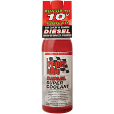
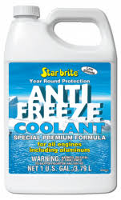

Ethylene glycol is primarily used in antifreeze formulations (50%) and as a raw material in the manufacture of polyesters such as polyethylene terephthalate (PET) (40%)
The major use of ethylene glycol is as a medium for convective heat transfer in, for example, automobiles and liquid-cooled computers. Ethylene glycol is also commonly used in chilled-water air-conditioning systems that place either the chiller or air handlers outside, or systems that must cool below the freezing temperature of water. In geothermal heating/cooling systems, ethylene glycol is the fluid that transports heat through the use of a geothermal heat pump. The ethylene glycol either gains energy from the source (lake, ocean, water well) or dissipates heat to the sink, depending on whether the system is being used for heating or cooling.

Pure ethylene glycol has a specific heat capacity about one half that of water. So, while providing freeze protection and an increased boiling point, ethylene glycol lowers the specific heat capacity of water mixtures relative to pure water. A 1:1 mix by mass has a specific heat capacity of about 3140 J/(kg·°C) (0.75 BTU/(lb·°F)), three quarters that of pure water, thus requiring increased flow rates in same system comparisons with water. The formation of large bubbles in cooling passages of internal combustion engines will seriously inhibit heat flow (flux) from that area, thus allowing nucleation (tiny bubbles) heat transfer to occur is not advisable. Large bubbles in cooling passages will be self-sustaining or grow larger, with virtually the complete loss of cooling in that spot. With pure MEG that hot spot has to get to 200 °C (392 °F). Cooling due to other effects such as air draft from fan etc. (not considered in pure nucleation analysis) will assist in preventing large-bubble formation.
Ethylene glycol disrupts hydrogen bonding when dissolved in water. Pure ethylene glycol freezes at about −12 °C (10.4 °F), but when mixed with water, the mixture does not readily crystallize, and therefore the freezing point of the mixture is depressed. Specifically, a mixture of 60% ethylene glycol and 40% water freezes at −45 °C (−49 °F).[3] Diethylene glycol behaves similarly. It is used as a de-icing fluid for windshields and aircraft. The antifreeze capabilities of ethylene glycol have made it a component of vitrification (anticrystallization) mixtures for low-temperature preservation of biological tissues and organs. Mixture of ethylene glycol and water can also be chemically termed as glycol concentrate/compound/mixture/solution.

However, the boiling point for aqueous ethylene glycol increases monotonically with increasing ethylene-glycol fraction. Thus, the use of ethylene glycol not only depresses the freezing point, but also elevates the boiling point such that the operating range for the heat-transfer fluid is broadened on both ends of the temperature scale. The increase in boiling temperature is due to pure ethylene glycol having a much higher boiling point and lower vapor pressure than pure water; there is no chemical stabilization against boiling of the liquid phase at intermediate compositions, as there is against freezing.
In the plastic industry, ethylene glycol is an important precursor to polyester fibers and resins. Polyethylene terephthalate, used to make plastic bottles for soft drinks, is prepared from ethylene glycol.
Ethylene glycol is used in the natural gas industry to remove water vapor from natural gas before further processing, in much the same manner as triethylene glycol (TEG).
Because of its high boiling point and affinity for water, ethylene glycol is a useful desiccant. Ethylene glycol is widely used to inhibit the formation of natural gas clathrates (hydrates) in long multiphase pipelines that convey natural gas from remote gas fields to a gas processing facility. Ethylene glycol can be recovered from the natural gas and reused as an inhibitor after purification treatment that removes water and inorganic salts.
Natural gas is dehydrated by ethylene glycol. In this application, ethylene glycol flows down from the top of a tower and meets a rising mixture of water vapor and hydrocarbon gases. Dry gas exits from the top of the tower. The glycol and water are separated, and the glycol recycled. Instead of removing water, ethylene glycol can also be used to depress the temperature at which hydrates are formed. The purity of glycol used for hydrate suppression (monoethylene glycol) is typically around 80%, whereas the purity of glycol used for dehydration (triethylene glycol) is typically 95 to more than 99%. Moreover, the injection rate for hydrate suppression is much lower than the circulation rate in a glycol dehydration tower.
Minor uses of ethylene glycol include the manufacture of capacitors, as a chemical intermediate in the manufacture of 1,4-dioxane, as an additive to prevent corrosion in liquid cooling systems for personal computers, and inside the lens devices of cathode-ray tube type of rear projection televisions. Ethylene glycol is also used in the manufacture of some vaccines, but it is not itself present in these injections. It is used as a minor (1–2%) ingredient in shoe polish and also in some inks and dyes. Ethylene glycol has seen some use as a rot and fungal treatment for wood, both as a preventative and a treatment after the fact. It has been used in a few cases to treat partially rotted wooden objects to be displayed in museums. It is one of only a few treatments that are successful in dealing with rot in wooden boats, and is relatively cheap. Ethylene glycol may also be one of the minor ingredients in screen cleaning solutions, along with the main ingredient isopropyl alcohol. Ethylene glycol is commonly used as a preservative for biological specimens, especially in secondary schools during dissection as a safer alternative to formaldehyde. It is also used as part of the water-based hydraulic fluid used to control subsea oil and gas production equipment.
Ethylene glycol is used as a protecting group in organic synthesis to protect carbonyl compounds such as ketones and aldehydes.